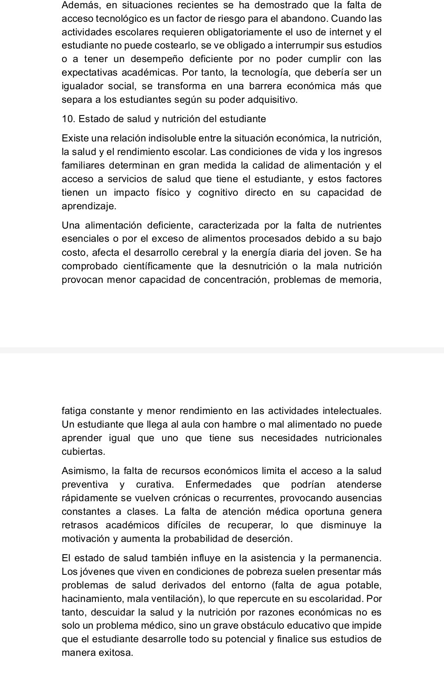
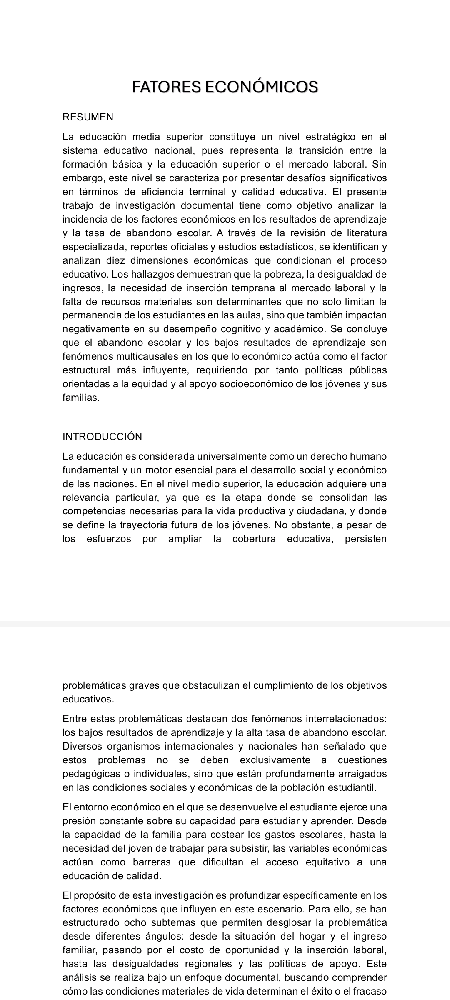

EXPRESIÓN II
GUILLERMO RAMIREZ BARRERA
El profesor solicitó elaborar una investigación documental en el cuál debíamos anotar las causas y consecuencias del abandono escolar en la media superior.
Mis compañeros de equipo se encargaron de dividirse el trabajo en 10 cuartillas ya que el profesor requeria 80 hojas para el trabajo.
Cada integrante se ocupó de investigar diversos subtemas y estrusturar la información de acuerdo a las peticiones del maestro.
Finalmente el trabajo se engargoló y se entregó con una portada formal.

